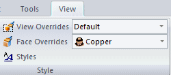
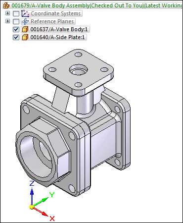
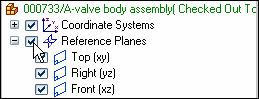
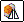
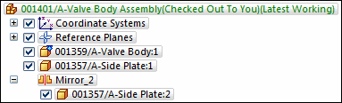
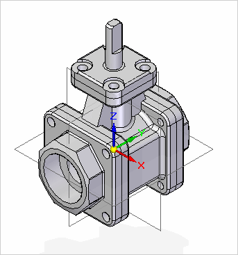

Activity: Add content to an existing managed document
In this activity, learn how to open existing Teamcenter-managed Solid Edge documents and use options to minimize the effort required to locate them. Learn how to work with revision rules to access the most appropriate version of the document and how to examine multiple files as they are written to disk and to Teamcenter.
After completing this activity, you will be able to:
-
Open an existing managed document using options on the Open File dialog box.
-
Focus the display of items in the document list.
-
Use Revision Rules to your advantage.
Instructions for loading the activity files are found in Activity data set and configuration requirements. The activities assume ISO templates are loaded.
Start Solid Edge with Teamcenter enabled.
On the startup screen, click Open  .
.
Log in to Teamcenter when prompted.
The Open File dialog box displays and the Browse location is set to the location where it was last used.
Ensure the Browse location is set to your Recently Used Items folder.
On the Filter Options pane, set the Files of Type to Assembly documents (*.asm) to restrict the items shown to assemblies.
In the Open Options pane, set the Revision Rule to Latest Working.
The Latest Working Revision Rule opens the latest item regardless of its release status.
Revision Rules are always active. Be sure you select the appropriate revision rule anytime you open a document.
Set the level of detail for viewing Teamcenter attributes by changing the View Detail to Full.
Notice the display of the document list changes.
Click the + adjacent to your assembly to expand the Item and Item Revision to see the Dataset.
The Item, Item Revision, and Dataset display on individual rows in the list.
Select the handle assembly you created in the previous lesson and click Open.
In PathFinder, select the Item named Handle Cap.
Choose View tab→Style group→Face Overrides list, and select Copper.

Select Teamcenter tab→Close→Close.
In the Upload dialog box, change the Item Name to Modified Handle Assembly.
Set the action to Check-In.
Click Perform Actions.
-
From the File tab, click New→ISO Metric Assembly.
Click Save  on the Quick Access toolbar.
on the Quick Access toolbar.
The New Document dialog box is displayed.
Ensure the Item Type is set to Item.
Click Assign All to have the properties assigned for you.
Ensure the action is set to Upload.
This adds it to Teamcenter, but leaves it checked out to you.
Change the Item Name to Valve Body Assembly.
Enter a Dataset Description of Assembly Created in Activity 5.
Click Perform Actions.
The document is saved to disk and created in Teamcenter, however it remains checked out to you.
Click the Teamcenter Parts Library tab .
From the Valve folder, drag the item with the Item Name of Valve Body into the assembly window.
Drag the item with the Item Name of Side Plate into the assembly window.
You are automatically entered into the FlashFit command.
Fit the view.
When you are prompted to click on an element of the placement part or choose a different relationship type, mate the back face of the side plate to the valve body.
Create the second relationship by clicking a cylinder of the bolt hole on the side plate and mating it with the corresponding cylinder that is the hole for the bolt on the valve body.
Place the third relationship by mating another of the bolt holes on the plate with the bolt hole on the valve body.
The part should be fully constrained.

Turn on the display of reference planes by selecting the check box adjacent to the Reference Planes collector in PathFinder.

Choose Home→Pattern group→Mirror Components

.Respond to the prompt to click on components to be mirrored, by selecting the side plate.
To accept the selection, click on the Mirror Components command bar.
When you are prompted to click an assembly reference plane, click the Front (xz) reference plane as the axis about which to mirror the plate.
On the Mirror Components dialog box, set the Action column to Rotate and the Adjust column to the Front (XZ) plane, and then click OK.
On the Mirror components command bar, click Finish.
The side plate is mirrored to the opposite side of the valve body.
In PathFinder, notice you have an entry for the item, Side Plate and a Mirror group that contains the second instance of the same item.

Save the assembly.
From the Teamcenter Parts Library , drag the item with the Item Name of Top Plate into the assembly window.
Fit the view.
Use the FlashFit command to fully constrain the parts.
Save the assembly.
From the Teamcenter Parts Library , drag the item with the Item Name of Stem into the assembly window.
Fit the view.
Use the FlashFit command to position the stem into the valve body as shown in the drawing.

Save the assembly.
In the Teamcenter Parts Library, set the location to Recently Used Items and locate the modified handle assembly you created earlier.
Drag the modified handle assembly into the assembly window.
Choose Home tab→Select group→Select.
In PathFinder, right-click the top level assembly and click Activate.
Choose Home tab→Assemble group→Assemble.
Use FlashFit to fit the handle onto the stem.
Expand the Modified Handle Assembly and turn off the display of the handle cap.
In the Upload dialog box, set the Action to Check-In and type a Dataset Description of Completed Assembly.
Click Perform Actions.
From the QuickBar, click Open.
Set the view to Basic.
On the Open Options pane, select the check box Version from Cache.
Version from Cache opens the version of the document already loaded in cache on your local machine instead of transferring data from Teamcenter.
Select your completed assembly and click Open.
In PathFinder, clear the check box adjacent to the Reference Planes collector.
If you turned off the display of the handle cap earlier, select the Handle Cap in PathFinder and turn on the display.
Save the assembly.
-
Click the Close button in the upper- right corner of this activity window.
In this activity, you learned how to navigate the panes of the Open File dialog box.
Now you will be able to:
-
Open existing managed documents using various options from the Open File dialog box.
-
Limit the display of items in the document list in order to assist you in finding items quickly.
-
Use Revision Rules to access the appropriate revision of an item.
-
True or False: The Files of Type options on the Filter Options pane of the Open File dialog box filters the types of files displayed in the list of documents.
-
Setting the Files of Type field to (*.psm) filters the display to show only ____________________ documents.
-
Name three options you can set when opening existing documents from the Open File dialog box.
-
When you open an item you work with consistently throughout the day and you want to improve performance, set the __________ ________ ___________ check box on the Open Options pane of the Open File dialog box.
-
True — By using the Files of Type filter, you can limit the types of files displayed to that which you choose and minimize the effort required to locate the file you are looking for.
-
Setting the Files of Type field to (*.psm) filters the display to show only Sheet Metal documents.
-
A few of the options available to you in the Open File dialog box are:
-
When you open an assembly from the Open dialog box, you can improve performance by choosing to hide all components.
-
When you open a draft document you can choose to Inactivate Drawing Views so the 3D content is not downloaded to cache.
-
You can use Revision Rules to determine which item revisions are displayed for the item you choose.
-
-
When you open an item you work with consistently throughout the day and you want to improve performance, set the Version from Cache check box in the Open Options pane of the Open File dialog box.